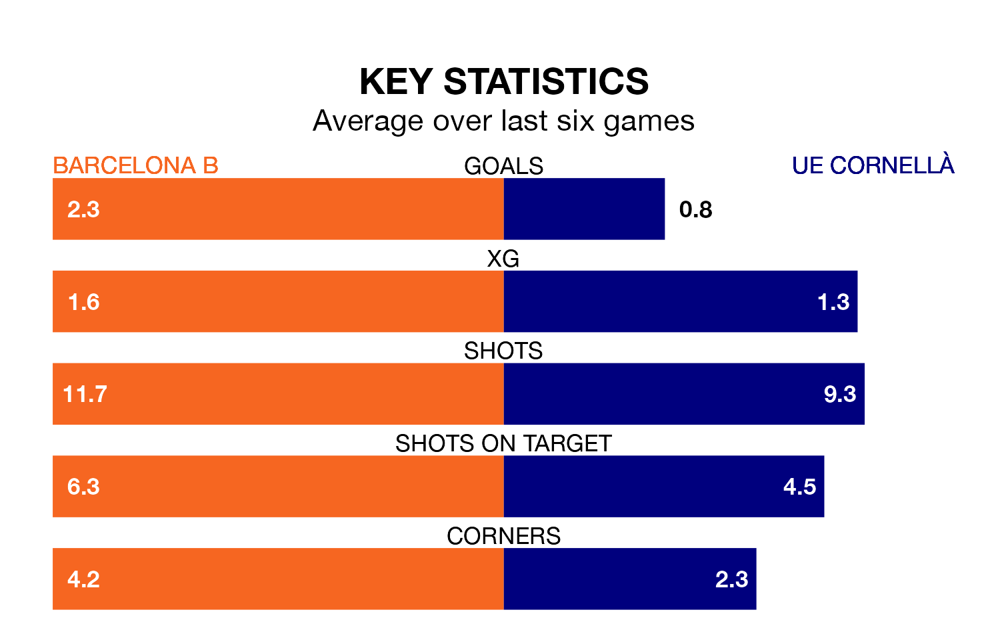

Barcelona B are on an excellent run ahead of hosting UE Cornellà on Sunday, with 16 points collected from their last six games.
Barcelona B have picked up five wins and one draw in their last six Primera Division RFEF Group 1 games, and face an UE Cornellà side whose last six games have brought two wins and four draws.
With 44 goals in 28 games so far this season, Barcelona B are the league's third-highest scorers with 1.6 goals per game. And they are conceding at an average rate, letting in 29 goals at a rate of 1.0 per game.
UE Cornellà, meanwhile, are below average scorers, with 0.9 goals per game, compared to a league average of 1.0. They have conceded 1.0 goal per game.
In Pau Victor, the hosts have the league's sharpest shooter so far this season. He has notched 12 goals in 21 appearances.
His goal rate of one every 157 minutes is quicker than that of Claudio Mendes Vicente, the away team's top scorer with a goal every 235 minutes, and a total of six goals in 16 games.
Barcelona B are third in the table after 28 games, of which they have won 15 and drawn six, earning 51 points.
UE Cornellà are nine places behind Barcelona B in 12th, with eight wins and 10 draws putting them on 34 points.
In the last 10 years, Barcelona B and UE Cornellà have played each other on 14 occasions. Barcelona B won five of them, UE Cornellà four, and they drew five times.
On average, Barcelona B scored 1.4 goals and UE Cornellà 1.1 in those matches.
Their last meeting was on November 26, when Barcelona B won 2-0 away.
Barcelona B's last match was on March 16, a 4-2 win against CD Teruel, with Naim García García (two), Mamadou Fall and Noah Darvich getting the goals for Barcelona B.
UE Cornellà drew 0-0 with Gimnàstic de Tarragona last time out, also on March 16.
Updated: 10:19 (UTC), 22/03/24